eyo
Its december. Well as im writing this its sunday the 29th of december (i wanted to get ahead of this one for reason aht will become clear soon) my apartment is currently in a bit of a mess and im hosting new years in 2 days so gotta tidy up but atm im rather hungover from a great night of drinking last night. However i did just ge the dreaded “Call me” fb message from my mum as i had left my phone in the other room, got up to check it to see 3 missed calls - turns out my mum has run up to newcastle to be with my grandfather (whose now in a home, i saw him before christmas and im now very glad that i did). She didnt really go into details but she gave me the same call the day before my grandmother passed so thats now just an albatross around my neck. Anyway i cant let that stop me, his in the best place possible for it and is surrounded by his kids. (cw, dark - his not handled my grandmaothers passing well, so honestly it might be a relief which sounds utterly fucked to say but i love him deerly and i will miss him, i used to adore going up to the hunter to see him running the counter at the shop he and my grandmother used to run, im including a picture below because it means a lot to me and fuck you i do what i want)
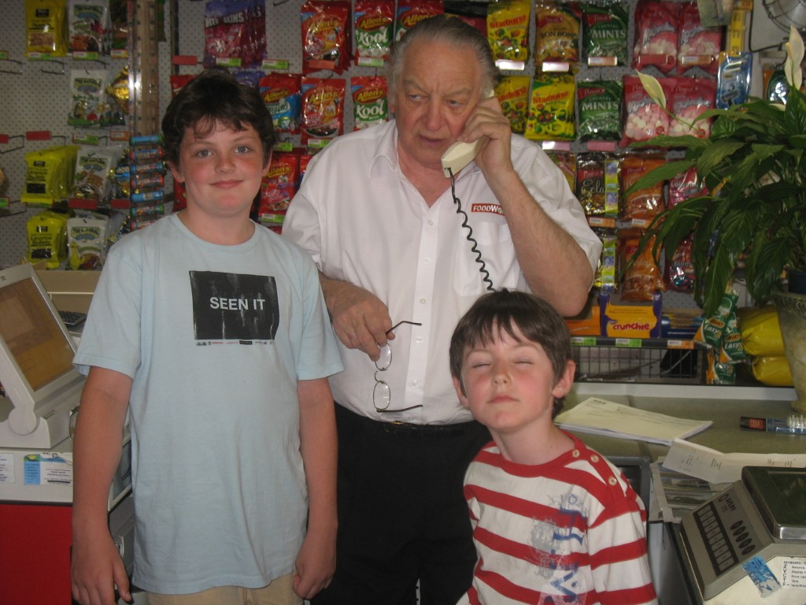
(ok this has got me crying i gotta stop ok sorry anyway photo recap idk)
Update, its now december 31st - ive tidied up the flat and prepared a cob loaf (well done the inners, its in the fridge its 2:30pm people done arrive for another 3 hours jesus why did i do it so early) and i can say that things are looking up, his not out of the woods but from what my mum was saying he isnt in painand she might be in denial over it but shes come home so idk.
There are a few photos on the iphone i took the morning of getting home but i cbf to find it and get them, this starts on the 2nd of december, aka a day i catually felt alive and not jetlaged to death
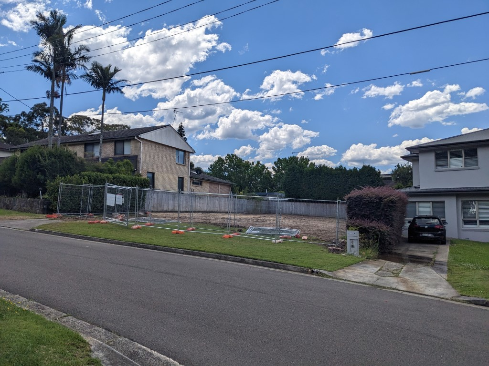
Went home to finally see how the house across the road was demolished and it is shocking to see something thats been there for as long as i can remember just not be there
Went to an gay burlesk circus night which was so fuckin gay, it was so nice to see the crowd just full of gay couples (the lesbians were ever so confident) and then jsut one straight guy who had the widest eyes clearly trying to not be caught staring at anything but damn they were hot as well
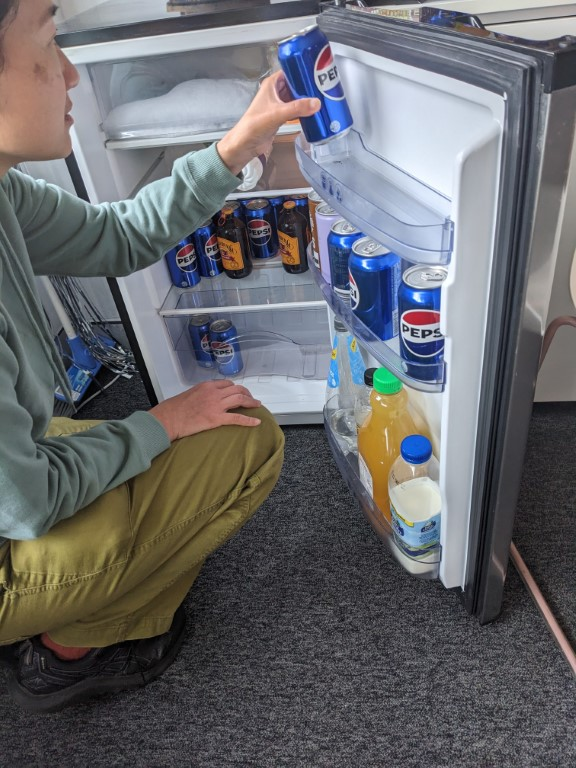
My work christmas party then was next, where it was back to the future themed and so they fucking filled the fridge to the brim with pepsis, about 4 of them were consumed over the two days.
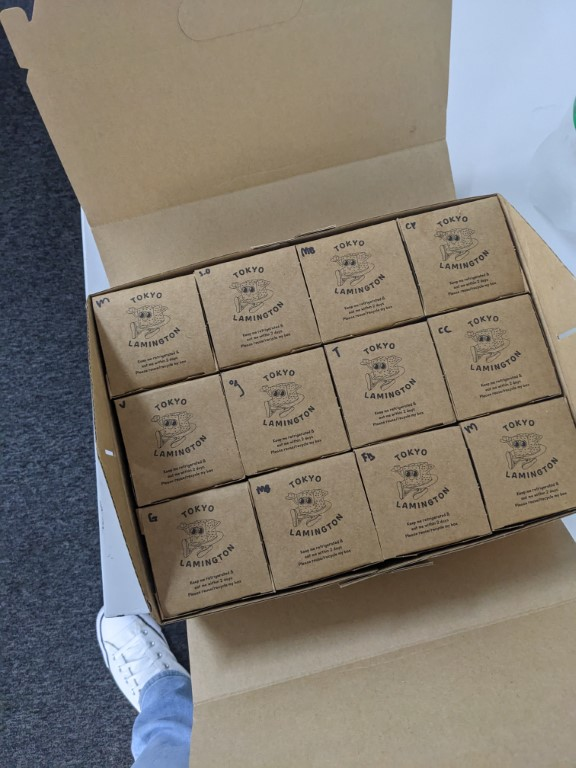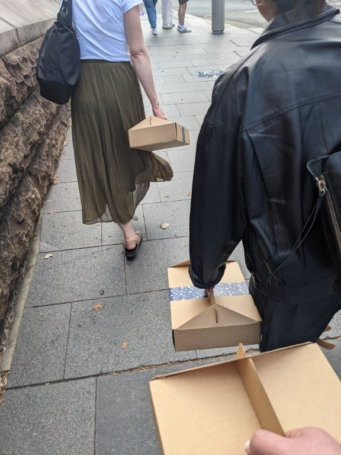
Then the work christmas present was 12 lamingtons, which we received at 10am before having to go into the city for the lunch at 12pm, and then also wonder home with them. These things also said “keep refrigerated and consume within 2 days” the frist two i had did not agree with my digestive system and i was so scared about the other 10, turns out the rest were fine but god some of the flavours just don't work
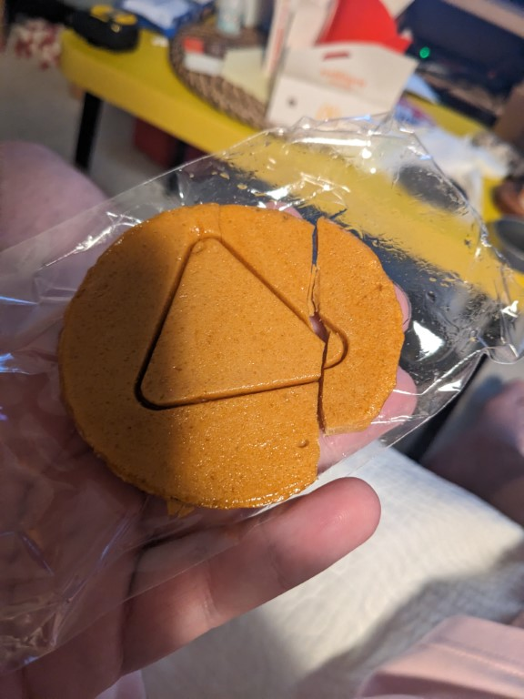
Found out the hard way that id be fucked in squid games season 1
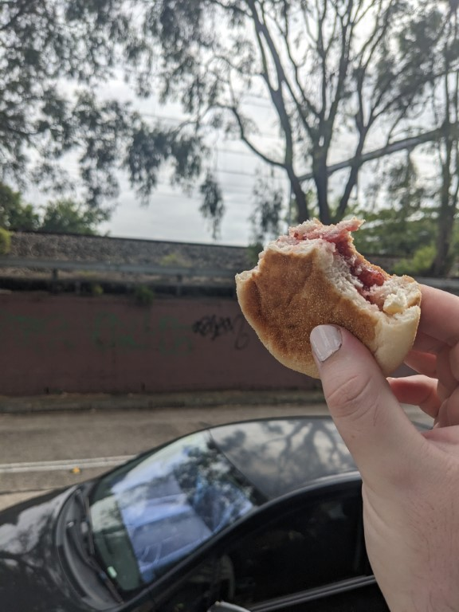
Woke up late when going to costco and thus had to eat the most depressing breakfast (an untoasted english muffin with no butter and just raspberry jam on it) while waiting for the lift
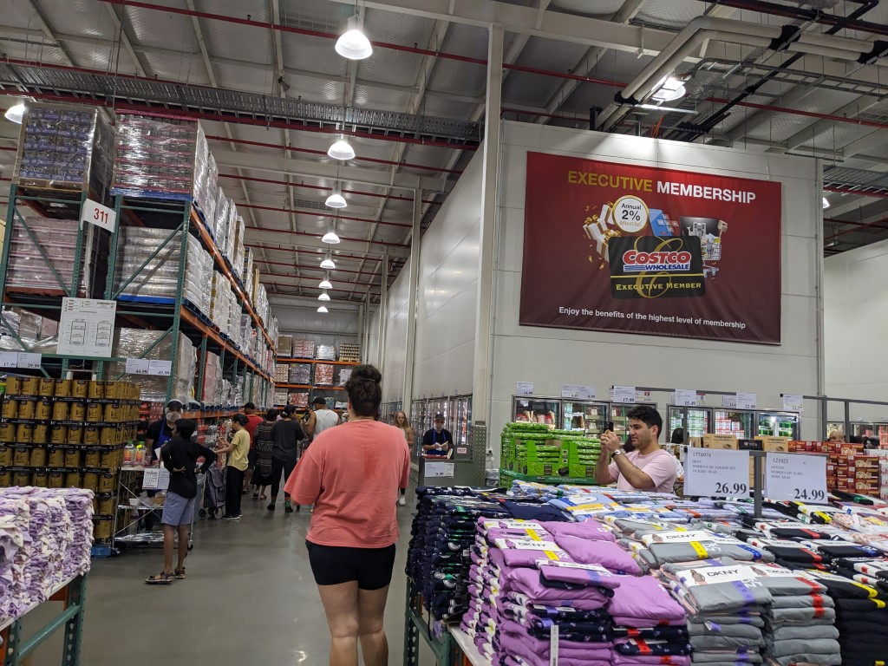
This Visit to costco was the least busy i had ever experienced it, whilst also finding some bits i actually wanted and having to call my mum to organise what food and cleaning supplies she wanted to be bought in bulk. I also now have a large jug of vegetable oil. Just thought youd all like to know that. No im not going to get up and picture it fuck you
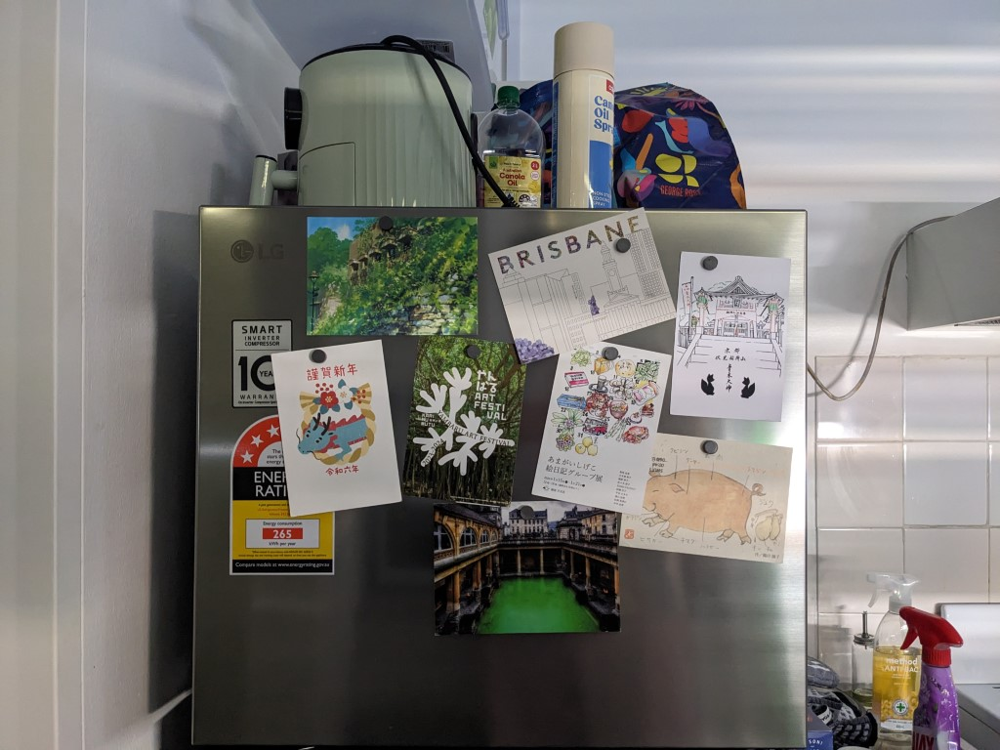
Finally realised that i have my own fridge so bought magnets and stuck up all the postcards people have sent me, truly love the vibe of them and idk send postcards! Sure theyre stupidly expensive but theyre fun while youre on holiday! And if youre lucky the british postal system will have them arrive long after youre home!
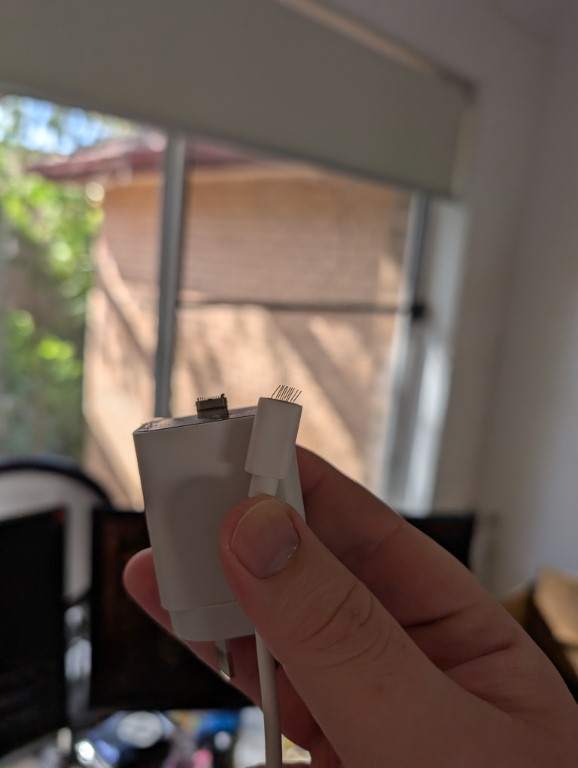
Stood on my phone charger while i was changing my sheets and i only managed to completely fuck the cable thankfully but ohf this hurt
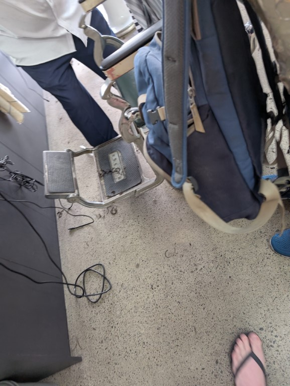
Finally went to get a haircut before christmas and got help from canva’s inner west slack chat who suggested this barber, cash only. Run by two old men. We did not speak during the haircut after i showed him a picture. It was $25 and is one of the best haircuts ive had in a while.
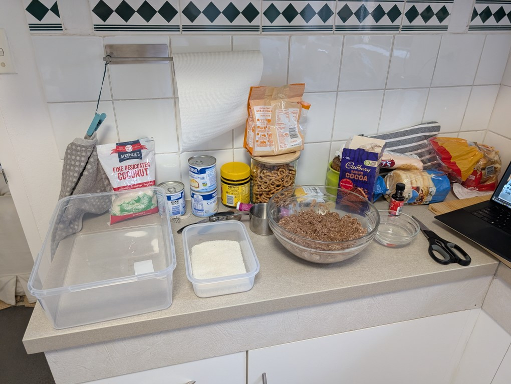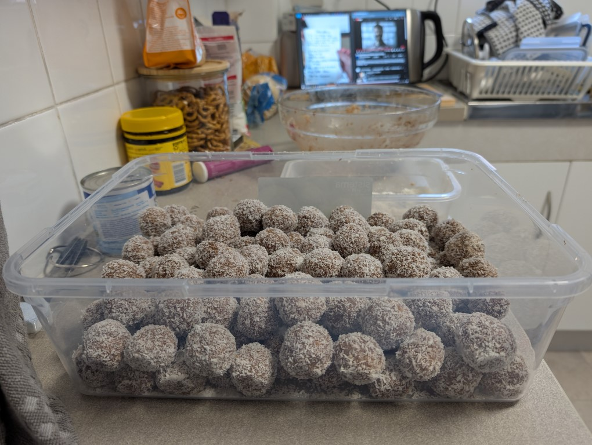
Made snowballs for christmas and did three batches because i was like “i want a lot” and i made ever so many, i still have some but theyre so good
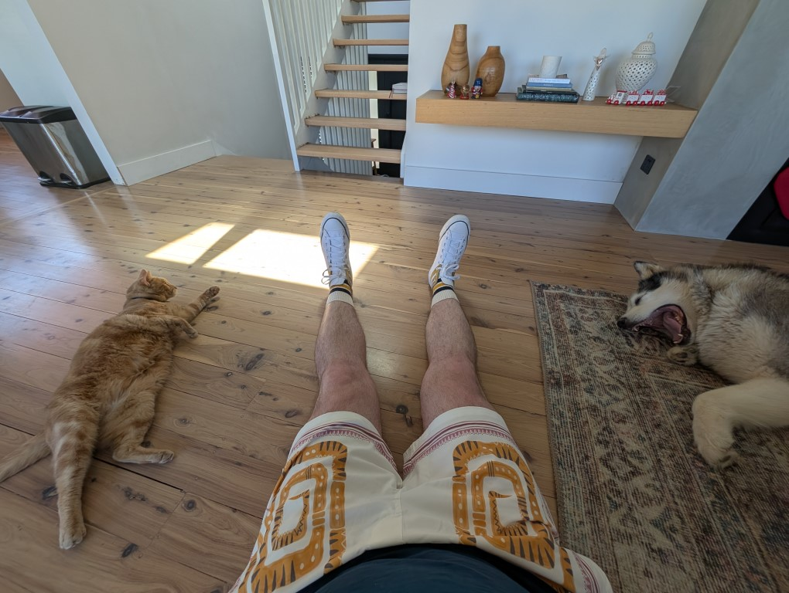
Arrived at the place my mum is pet/house sitting for on christmas eve and both the animals came to welcome me i adore them both (Felix is the cat, he sometimes likes to be picked up and cudled and other times just wants to be left alone, Ruby is the Malamoot and goes “ooh” instead of barking, gets insanely jealous when youre petting the cat - to the point we have to run defence on her. But is also just adorable and loves to roll over and demand pats)
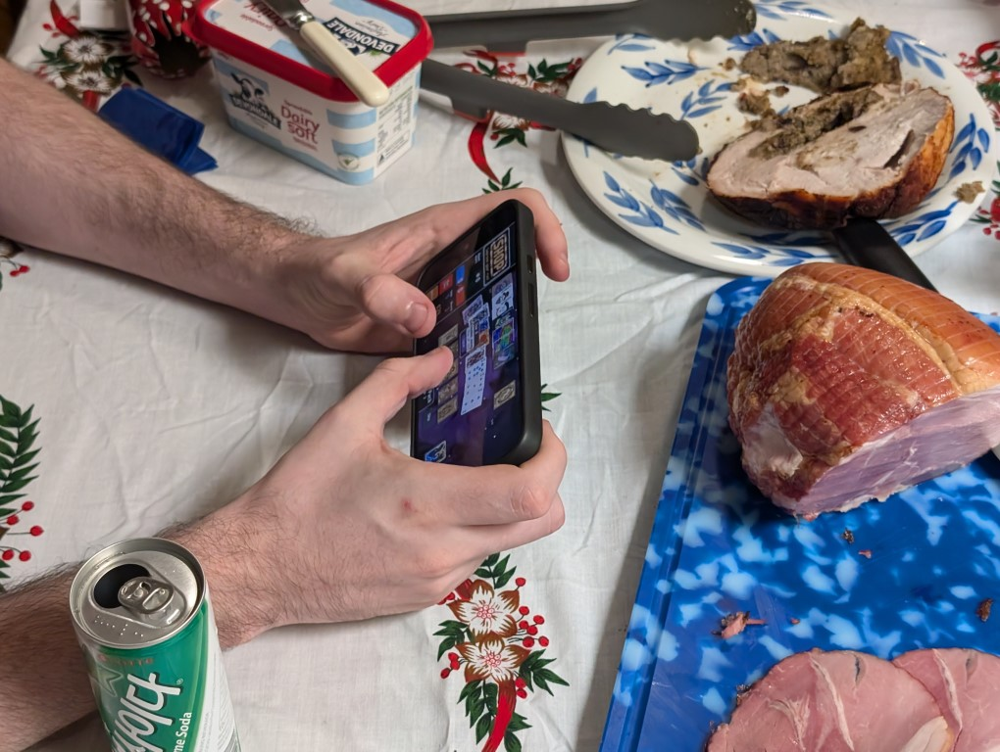
Christmas day was fun, my brother and i both played balatro after lunch at the christmas table and it felt hilarious to me
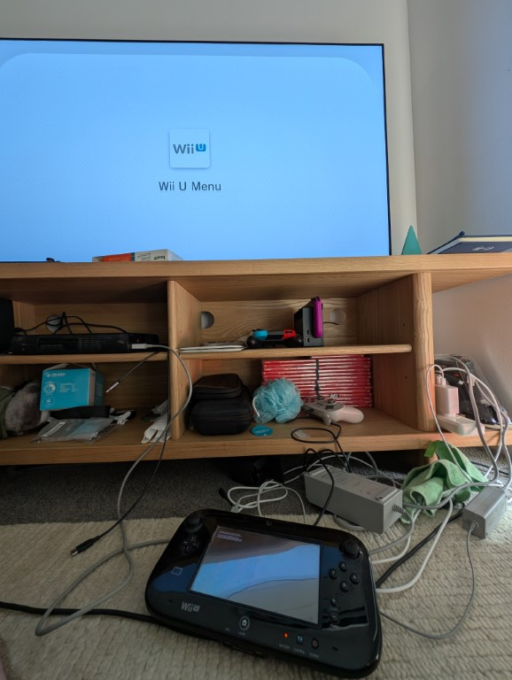
Re-hacked my wii u in prep for NYE, this is so annoying to do but also a piece of cake but its just so much back and forth - reading a guide and then going “wait i want to do this thing” then finding a vid that explains it but its slightly out of date so you have to decipher whats changed and just ughk. At least now i have 1 hdd plugged in with both Wii games and Wii U games so thats nice
Finishing 30 rock - The ending to this always gets to me, its a show so jammed full of jokes and heart that is like no other. I truly do think the jack x liz platonic relationship is one of the best on TV and im so glad its never ruined
Severence - s2 comes out soon and so im like “yeah fuck it ive seen enought trailer brake downs of s2 lets watch s1” and damn its good, ben stiller goin crazy mode
Arrested Development - I think the first two seasons of this might be some of the best television ive ever seen, s3 is not far behind but i feel it sorta gets wayed down with the fact they knew the writing was on the wall and wrote jokes about that but still its all just fun and so many all timer quotes people have from the show are only in one episode!
The Last Year of Television - A fun look back at the bullshit that was TV in australia, aka a lot of “wow the news sucks at being news”. Really makes me sad that free to air hasnt been taken out of its misery yet, there was a scree shot of the tv guide and something like 60% of what they all air is just news, like the project is repeated at 11pm!!!
Home alone 2 - the writer of this, john hughes, is the biggest chicago dude - the first movie was entirely shot there and it is a true love letter to his town. And this one is him having ot be like “ughk fine theres new york” which includes a bit of kevin standing utop the twin towers (i watched this with my mum and she was like “see id love to go to new york and go up there to experience that view oh those are the twin towers i cant do that any more” )
National lampoon’s christmas vacation - This is a movie where 30 year old Martin Short plays a 10 year old boy who terrorises everyone. I spent most of the movie waiting for the twist to be revealed that he was the anti christ and sent to earth to cause misery to all who cross his path, but nope! Just a literal cunt of a child. The movie is so wierd, but was such a laugh. The ending has the uncle actually taking a beat to consider if he should let the evil child die it rocks!
This is the first time im hosting a party, mainly because i actually have a place but still, nye is an interesting one because its the end of the year! Its a big thing. But also its like a week till my bday and thats scary. Anyway ever since 2018 i have worn the same outfit at every single NYE Party ive been to (the outfit is pictured below). I Purchased it from H&M waringah mall in 2018 for $10, the shirt is also only a Large so it is a squeeze now. I mention all of this because i don't think i have it in my wardrobe, which means its still buried somewhere at my parents place - but i am questioning if i want to bother going over there to get it, i love the tradition dearly but maybe 6 years is enough for it. I dunno ill see, i think i just like it because i start and end the year in the same outfit and its a funny bit to me.
As i write this i have like 4 chapters left in the return of the king, im seeing the lotr musical on the 8th of January and have plans to watch the movies prior to that. I have ever so many thoughts about the book, so much of it is fantastic, there are gripping characters and some real compelling moments that just took my breath away. Then there are long chapters that have people discussing the lineage of the town the characters have just arrived in which was so dull to me because i had no idea who was talking or who they were or where they were or why they were important. Also (spoilers) the fact the ring going in is just golem slipping? At the time i was like THAT WAS IT??? But now i think i can appreciate that the line “golumn has a part yet to play in this story” was true and its arguably so funny to me because i assumed it was going to be a star wars lava planet thing where the whole last third of the book is them fighting, the rings influence becoming more and more on frodo before sam has to convince him to yeet it off. I now realise that the reason i thought i knew the ending was from the ending to Total Drama World Tour, which parodies both star wars and LOTR how interesting. Anyway i also think Sam and Frodo is such a gay relationship, even tho sam legitiamtely means to please his master in a “i have laid my sword to him it is upon my honour that i must see this through to the end” it also does come across as “if i do a good job ill get to suck off mr frodo”

Anyway that was 2024, i dunno. its 5:12pm as i write this but i think im gonna see if i can make gmail send it at 11:59pm as i think thats funny
le end